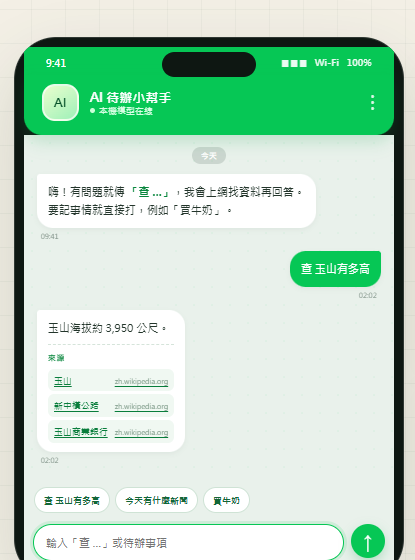
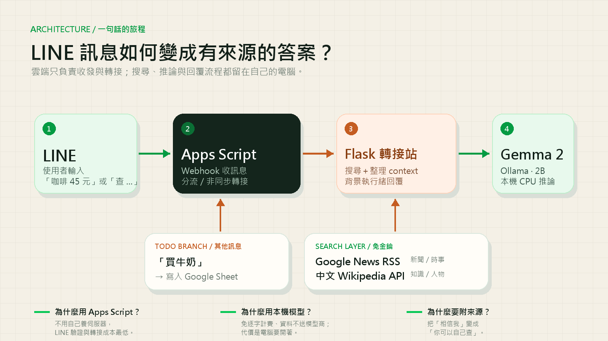

同一個聊天視窗，兩種工作流：
「咖啡 45 元」自動記帳、分類、累計；「查 …」得到有來源的答案。

手動打類別、換工具、整理匯總。不想為每筆花費開一個 App。
在 LINE 裡問，切到瀏覽器搜尋，看完再切回來。注意力被切成三段。
逐字計費、需要 API key；敏感內容也不一定想送出門。
新聞題走 Google News RSS；知識題走中文 Wikipedia。
記帳走本地解析＋加總，完全免 API；分類用關鍵字 heuristic。

Apps Script 先回 200，Flask 算完再直接呼叫 Reply API。
Google News RSS＋Wikipedia，只把前 3 筆放進 prompt。
gemma2:2b、num_predict=220；啟動時先 warm_up()。
本機用環境變數；Apps Script 用指令碼屬性。
Cloudflare Tunnel 取代會變的 ngrok
驗證 X-Line-Signature ＋ allowlist
AI 分類／預算警示，或使用者自訂類別
抓正文做 RAG ＋雲端模型 fallback